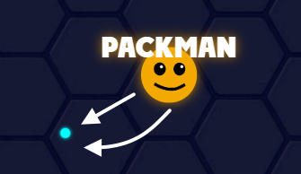
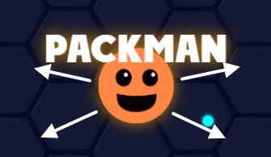
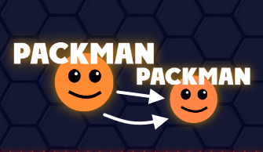
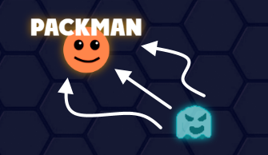
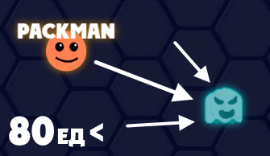
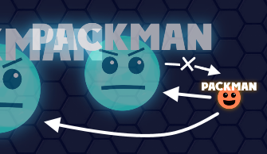
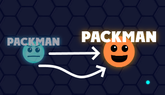
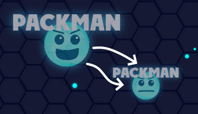

Основная суть игры PackMan.io - быть пакменом, который сможет стать сильнейшим на арене и набрать больше всех очков. Нужно становиться сильнее и есть других пакменов, но нужно быть осторожным, на великой арене пакменов обитают призраки и там много опасностей...
1. Вам нужно есть синие сферы. Они добавляют вам силы и очки.
2. Ешьте сферы и становитесь больше.
3. Ешьте пакменов, которые меньше вас, и убегайте от тех, которые больше вас.
4. Остерегайтесь призраков. Они очень опасны.
1. Вам нужно держаться подальше от призраков, особенно, если вы большой и сильный, они любят таких есть.. Ам!!
2. Если вы маленький, и у вас меньше 80 единиц силы, вы можете есть призраков. Поэтому маленьких пакменов лучше оставить, они могут спасти вас от призраков.
3. Если вы встретили призрака пакмена, которого вы меньше, то вы можете его съесть, если вы меньше его. Только не забывайте, что вы растёте...
1. Вам нужно держаться подальше от маленьких пакменов, они хоть только и появились, но они чувствуют, что вас можно съесть, ам ням...
2. Ешьте крупных пакменов, они большие и не поворотливые, вы успеете их догнать и съесть... До конца вы их не съедите, вы всего-лишь заберёте у них их силу, а они станут призраками.
3. Между призраками почти такие же правила, как и между обычными пакменами. Хоть они и стали призраками, своё стремление к превосходству они не забыли. Крупные призраки едят более мелких, но только что появившихся призраков они съесть не могут...
